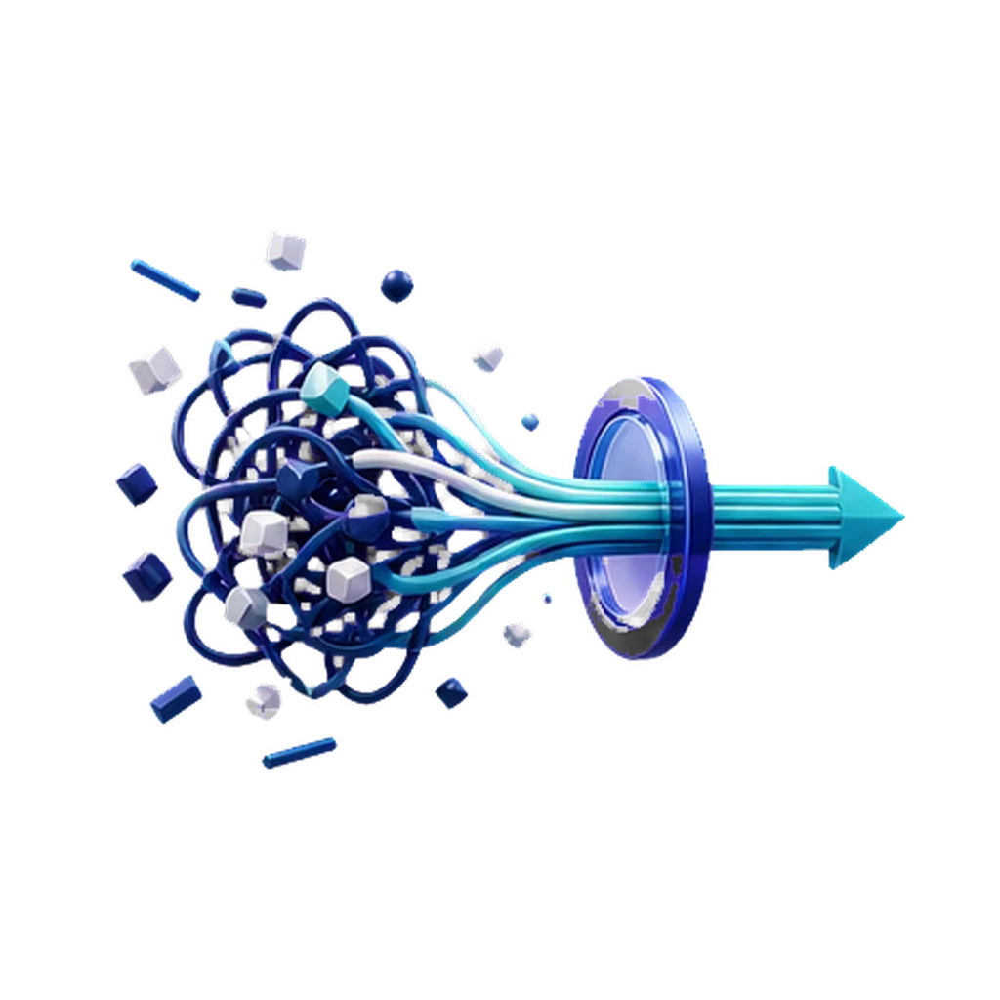
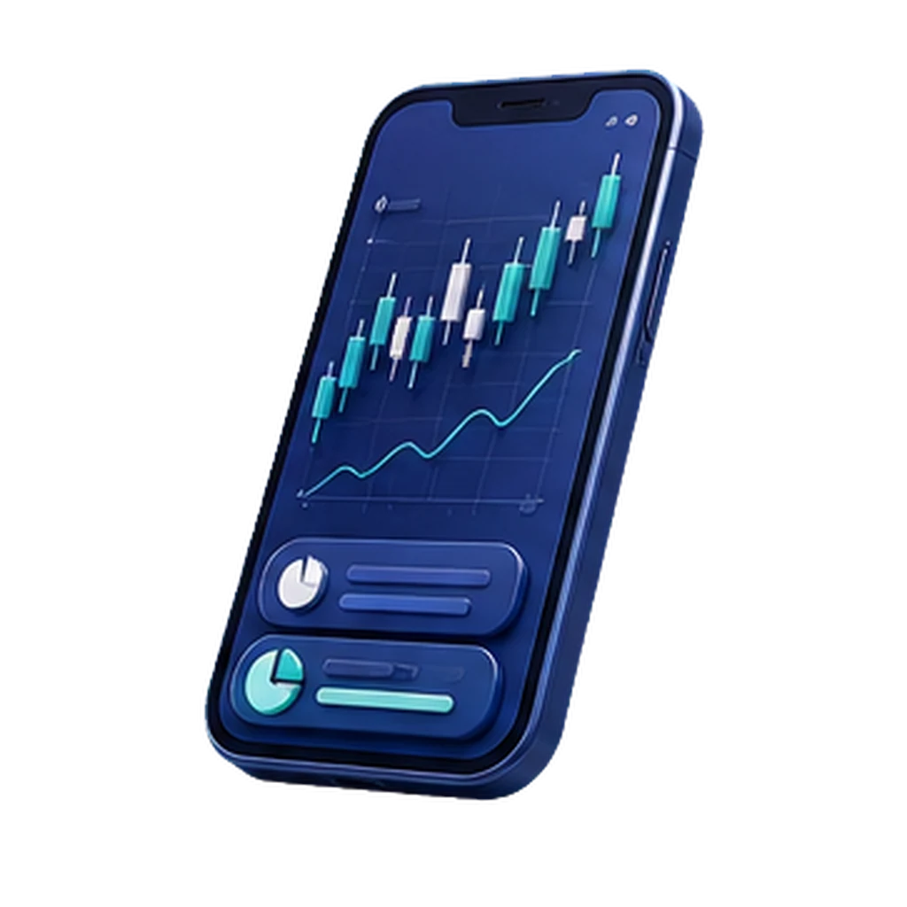

השקעות בשוק ההון הן מקצוע. אין סיבה לעשות אותן לבד.
ליווי אישי, אנושי ושוטף — להשקיע עם שיטה, לא עם תחושת בטן. ישירות בוואטסאפ, בלי התחייבות.
שלוש דרכים לעבוד יחד
בחרו את המסלול שמתאים לכם — מליווי אישי שוטף, דרך קורס 1:1, ועד הרצאה מעוררת מחשבה לארגון.
ליווי השקעות אישי
קו פתוח, תיק מסודר, ומפגש חודשי שמחזיק את התהליך. בונים אסטרטגיה שמתאימה לחיים שלך, לא למצגת.
לפרטים על הליוויקורס השקעות ערך 1:1
לא עוד קורס דיגיטלי. לומדים בלייב, שואלים בזמן אמת ומבינים איך לחשוב — לא לשנן מושגים.
לפרטים על הקורסהרצאות לחברות וארגונים
להפוך את שוק ההון לנגיש, מצחיק ומעשי. שעה אחת שיכולה לשנות את הדרך שבה אנשים מסתכלים על כסף.
לפרטים על ההרצאותלמה רוב המשקיעים הקטנים לא באמת מצליחים
רוב המשקיעים הקטנים לא נכשלים מחוסר ידע — אלא מחוסר שיטה, סדר ומישהו לחשוב איתו. פחות רעש, יותר תהליך.
- רעש אינסופי — כותרות, "טיפים חמים" והמלצות סותרות מכל כיוון.
- החלטות רגשיות — פחד ותאוות בצע מנהלים את התיק במקום שיטה.
- בלי מערכת — פעולות בודדות בלי אסטרטגיה, בלי מעקב ובלי מישהו לחשוב איתו.

החברות שמזיזות את השוק
השקעות ערך מתחילות בהבנת עסקים אמיתיים — כמה מהחברות המובילות בשוק האמריקאי.
להמחשה ולעיצוב בלבד — אינו ציטוט שוק אמיתי ואינו המלצה לרכישה או מכירה.
מי שכבר עובדים איתי
אנשים אמיתיים שעברו מספקולציה לתהליך מסודר — בגובה העיניים, בלי הבטחות.
השאירו פרטים לשיחת היכרות
נחזור אליכם בוואטסאפ או בטלפון. ללא התחייבות.
פותחים חשבון מסחר ומתחילים ליישם
רוצים להתחיל ליישם את מה שבונים יחד? אני מלווה גם בפתיחת חשבון מסחר נוח בבית השקעות, כדי שתתחילו את המסע בסביבה אמינה ומסודרת.
לפתיחת חשבון מסחר
יד על ההגה, אצבע על הדופק.
כשיש שיטה, מעקב וזמינות — משקיעים אחרת. קו פתוח, תיק מסודר, ומפגש חודשי שמחזיק את התהליך: יש שיטה, יש מעקב, ויש עם מי לדבר.
- קו פתוח בוואטסאפ — שאלה, התלבטות, או רק לוודא? תמיד יש למי לכתוב.
- מעקב יזום — אני פונה כשיש סיבה אמיתית, לא מציף בהודעות סתם.
- נאמנים לתוכנית — בלי רדיפה אחרי כותרות; מחליטים בראש שקט ובצורה מסודרת.
שאלות נפוצות
כמה דברים שטוב לדעת לפני שמתחילים.
הופעות ואזכורים בפודקאסטים
שיחות על שוק ההון, השקעות ערך ופסיכולוגיה של כסף — בגובה העיניים. זמין בפלטפורמות: